Cos tu nie GRA
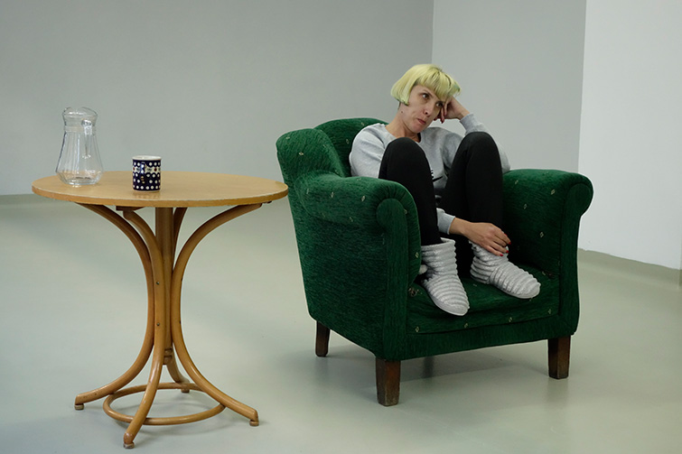
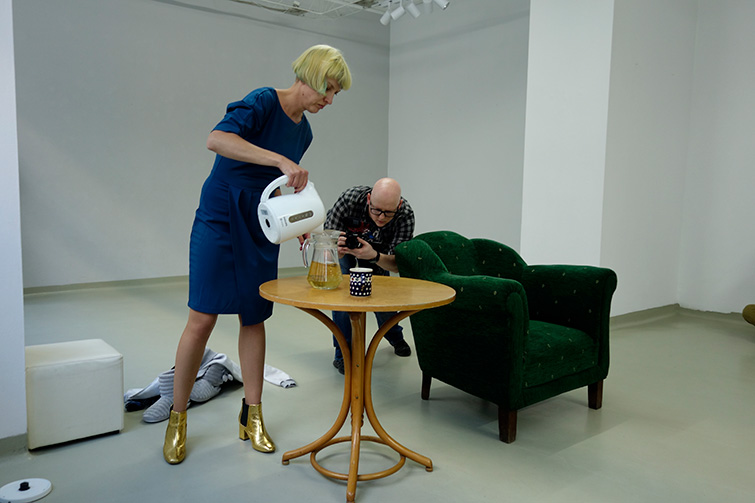
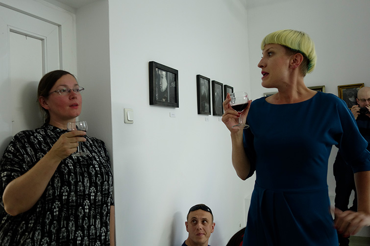
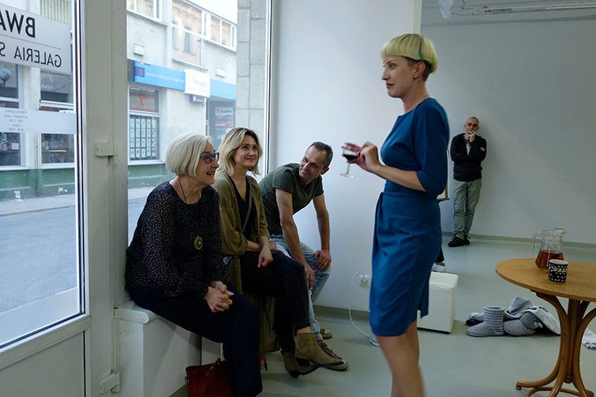
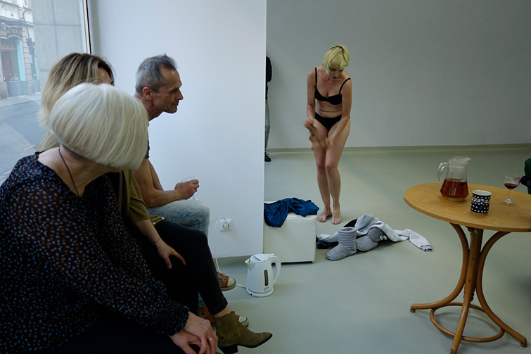
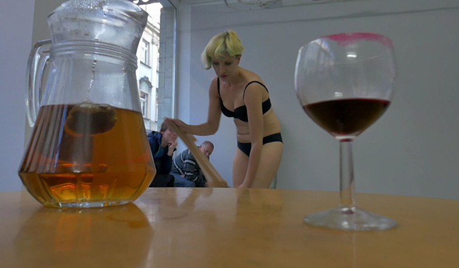
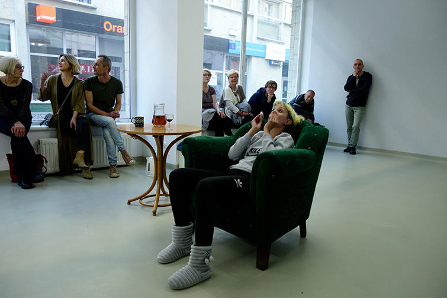
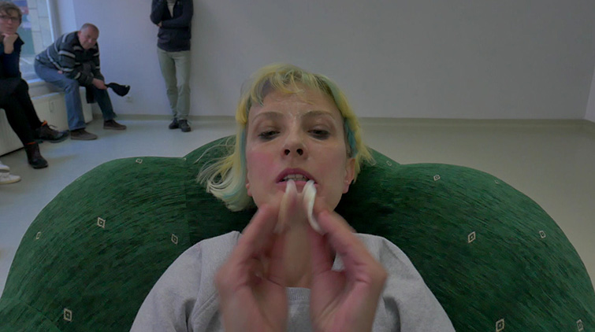
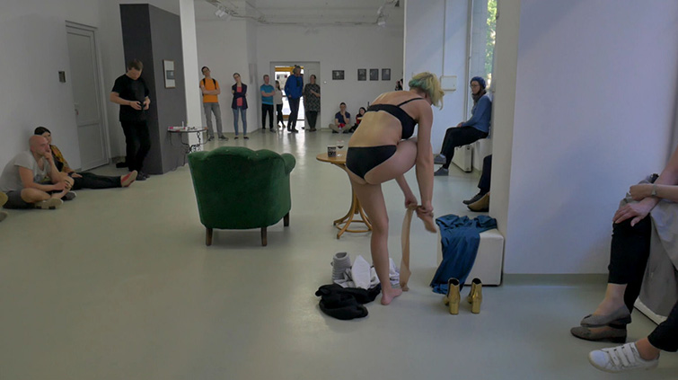
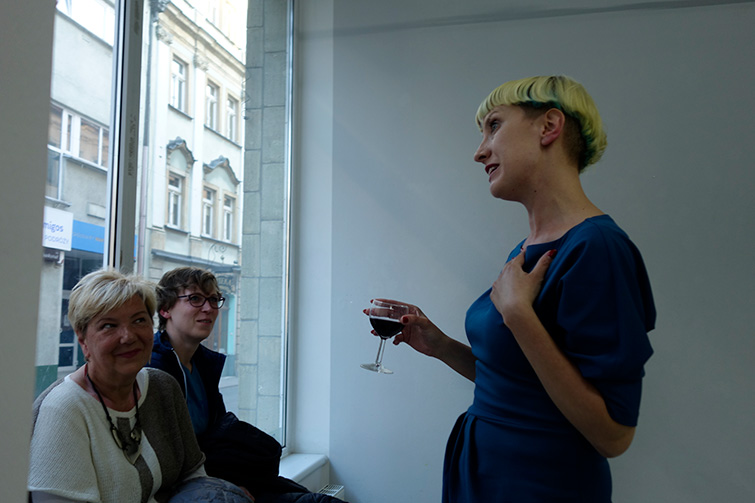
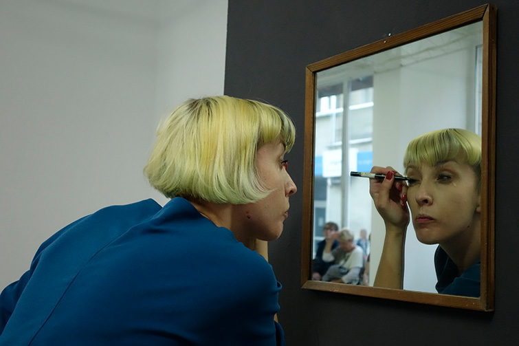
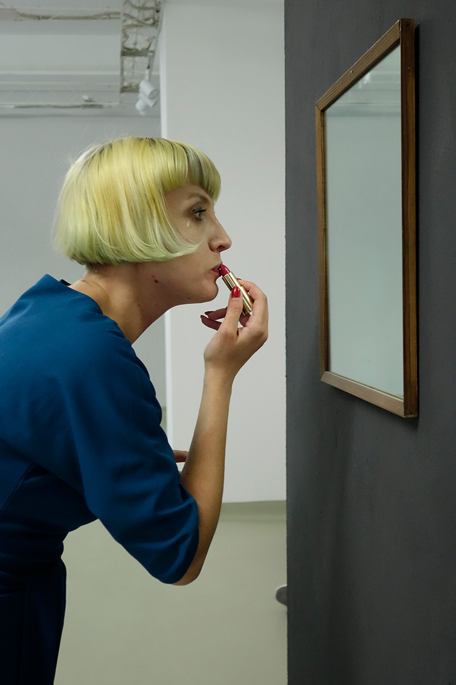
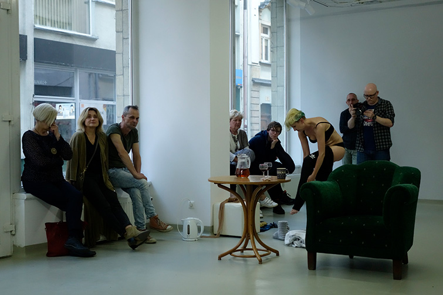
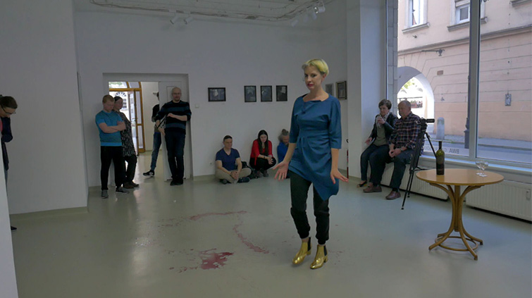
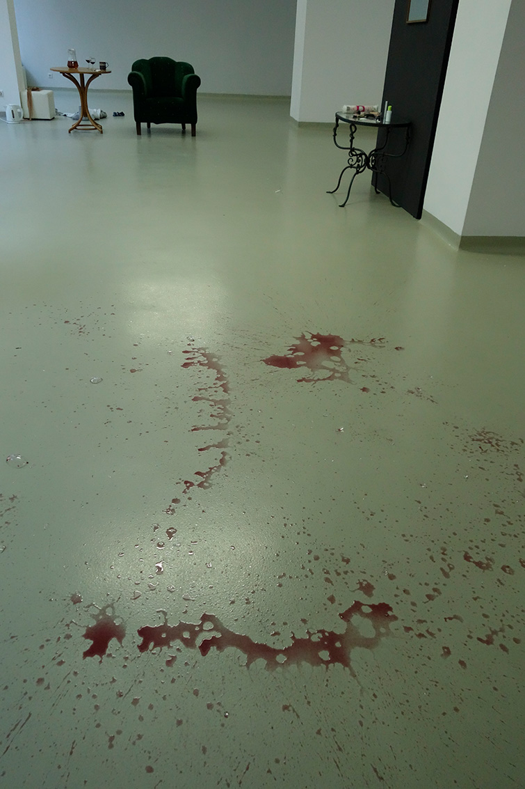
performance Izabeli Chamczyk "Cos Tu nie GRA" odbyl sie w galerii BWA Jelenia Gora w Noc Muzeow 2019.
Artystka podejmie problem rozdwojenia i rozbicia, rozterek moralnych i niezgody na kompromisy.
Gra wiaze sie z umiejetnoscia lub nieumiejetnoscia grania, zagrywka, rozgrywaniem sytuacji, w ktorej mozna potencjalnie cos zyskac. Performerka musi przyjmowac pozy i grac, wchodzic w role albo pozwalac sie w nie wtlaczac, poniewaz niegranie powoduje nieistnienie na rynku sztuki.
kamera: Blazej Stachewicz
montaz: Izabela Chamczyk